Character collection
AI Avatars
Characters made of light, texture, and motion.
 Open SkeletonNine emotional reactions plus idle, thinking, and answering. Play the round mechanical face and download MP4 or GIF clips.
Open SkeletonNine emotional reactions plus idle, thinking, and answering. Play the round mechanical face and download MP4 or GIF clips.
 Dot flockA round face made of moving dots, with fuller eyes. Combine 10 emotions, 10 activities, and 6 short reactions.
Dot flockA round face made of moving dots, with fuller eyes. Combine 10 emotions, 10 activities, and 6 short reactions.
 Red eyeA luminous glass eye that responds through its aperture, gaze, and light. Shares the full expression and reaction set.
Prismatic lensesSix character states, six palettes. Compare idle, listening, talking, thinking, writing code, and complete.
Ten motion ideasExplore liquid forms, eclipses, ribbons, an hourglass, fireflies, radar, helix, tide, bloom, and eyes.
Red eyeA luminous glass eye that responds through its aperture, gaze, and light. Shares the full expression and reaction set.
Prismatic lensesSix character states, six palettes. Compare idle, listening, talking, thinking, writing code, and complete.
Ten motion ideasExplore liquid forms, eclipses, ribbons, an hourglass, fireflies, radar, helix, tide, bloom, and eyes.
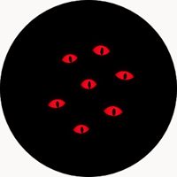
Constellation12 activities and 7 independent expressions. Seven luminous faces.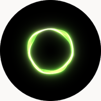
Halo12 activities and 7 independent expressions. Seven luminous faces.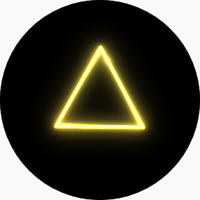
Prism12 activities and 7 independent expressions. Seven luminous faces.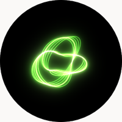
Knot12 activities and 7 independent expressions. Seven luminous faces.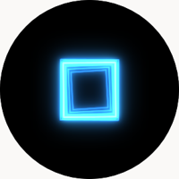
Portal12 activities and 7 independent expressions. Seven luminous faces.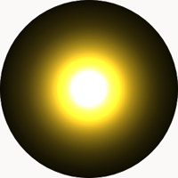
Sun12 activities and 7 independent expressions. Seven luminous faces.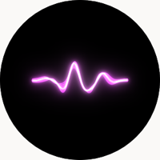
Pulse12 activities and 7 independent expressions. Seven luminous faces.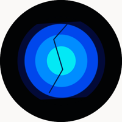
Wheatley12 activities and 7 independent expressions. Sixteen core eyes.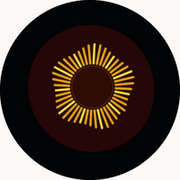
Space12 activities and 7 independent expressions. Sixteen core eyes.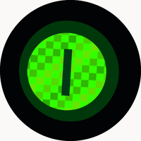
Rick12 activities and 7 independent expressions. Sixteen core eyes.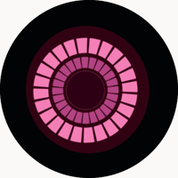
Fact12 activities and 7 independent expressions. Sixteen core eyes.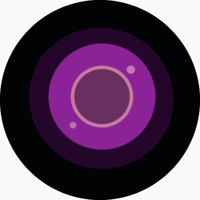
Morality12 activities and 7 independent expressions. Sixteen core eyes.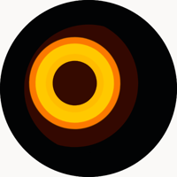
Curiosity12 activities and 7 independent expressions. Sixteen core eyes.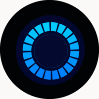
Intelligence12 activities and 7 independent expressions. Sixteen core eyes.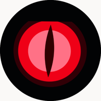
Anger12 activities and 7 independent expressions. Sixteen core eyes.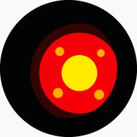
Paranoia12 activities and 7 independent expressions. Sixteen core eyes.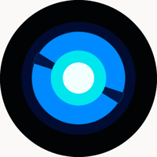
Optimism12 activities and 7 independent expressions. Sixteen core eyes.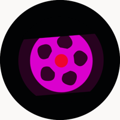
Nihilism12 activities and 7 independent expressions. Sixteen core eyes.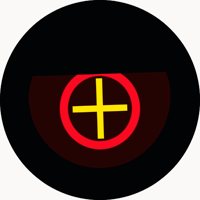
Priority12 activities and 7 independent expressions. Sixteen core eyes. Orbit12 activities and 7 independent expressions. Sixteen core eyes.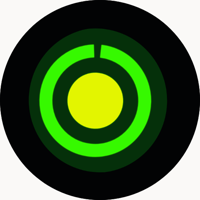
Signal12 activities and 7 independent expressions. Sixteen core eyes.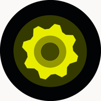
Gear12 activities and 7 independent expressions. Sixteen core eyes. Aperture12 activities and 7 independent expressions. Sixteen core eyes.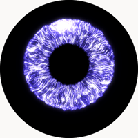
Assistant iris12 activities and 7 independent expressions. Assistant iris ring.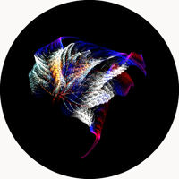
Fractal presence12 activities and 7 independent expressions. Procedural fractal presence.Interactive visual studies · No account needed